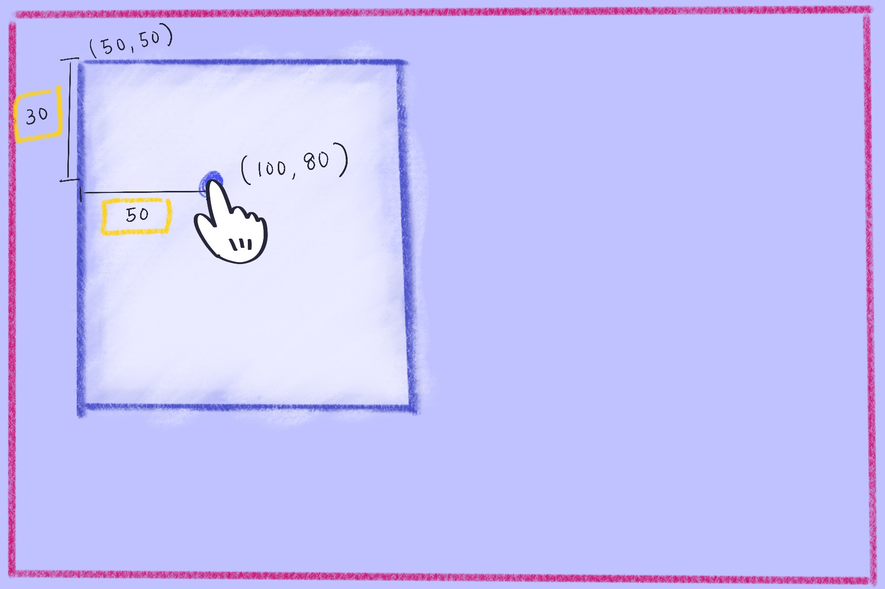
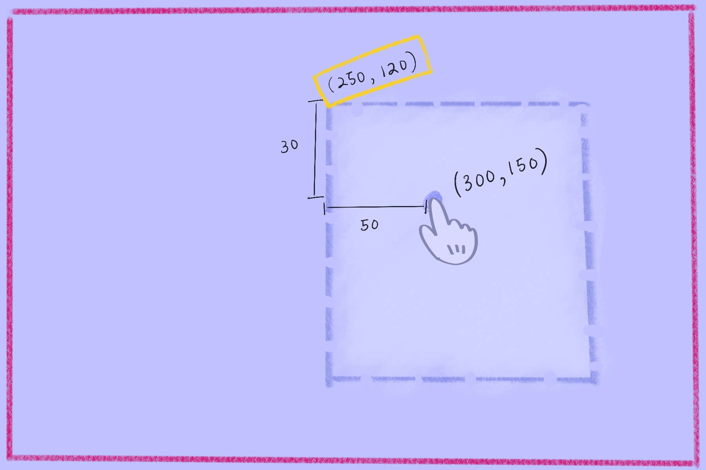

Draggable UI's
TODO: Something about how draggable UI's are awesome for the user
Event object
TODO: Event objects contain a plethora of awesome info, yo!
The basic steps
1. Get initial click position

1. Get initial click position
- Attach handler to mousedown event listener
-
Utilize
eventobject to get initial position
function mouseDown(event) {
var mouseY = event.clientY;
var mouseX = event.clientX;
}
elm.addEventListener("mousedown", mouseDown);
2. Get distance from initial click to element's top left corner
2. Get distance from initial click to element's top left corner
- Find element's top left position relative to viewport
- Subtract element's top left coordinates from initial click's coordinates
// get elm top and left coordinates
var elmY = elm.offsetTop;
var elmX = elm.offsetLeft;
// get diff from element top left to mousedown point
var diffY = mouseY - elmY;
var diffX = mouseX - elmX;
3. As mouse moves, get new mouse position
3. As mouse moves, get new mouse position
-
Attach handler to mousemove event listener
- Handler should only be fired when mouse is clicked and moving
- Use mousemove
eventobject to calculate new mouse coordinates
var isMouseDown = false;
function mouseDown(e) {
isMouseDown = true;
}
function mouseUp(e) {
isMouseDown = false;
}
function mouseMouse(e) {
if (!isMouseDown) return; // if mouse is not clicked, return and do nothing
// get new mouse coordinates
var newMouseY = e.clientY;
var newMouseX = e.clientX;
}
4. Determine new top left coordinates for element
4. Determine new top left coordinates for element
var newElmY = newMouseY - diffY,
newElmX = newMouseX - diffX;
5. Move element to new calculated coordinates

5. Move element to new calculated coordinates
- Set the element's
topandleftproperties to new coordinates
elm.style.top = newElmY + 'px';
elm.style.left = newElmX + 'px';
Let's see it in action.